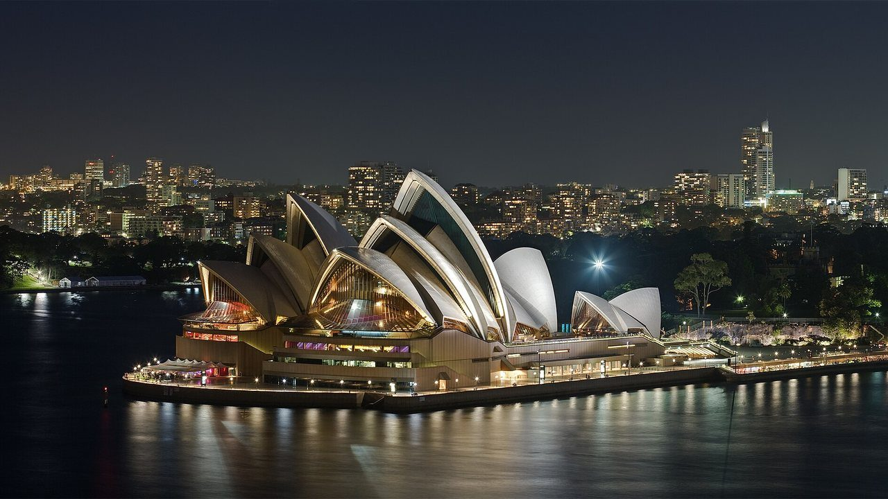

Race, Sydney Harbour Fireworks

Behind
Best +0:01
371W
Target 418 W-47 W
- Cadence
- 87rpm
- Heart
- 140bpm
- Speed
- 26.5km/h
Work6 of 24
1:39
Next: · 2:00 at level 11
+0.8%
3 m climbed
2.36 km
19
Resistance / 32
Solo races your best-time ghost: position reads Ahead or Behind, and solo alone gets a Pause button. Frozen at 5:51.